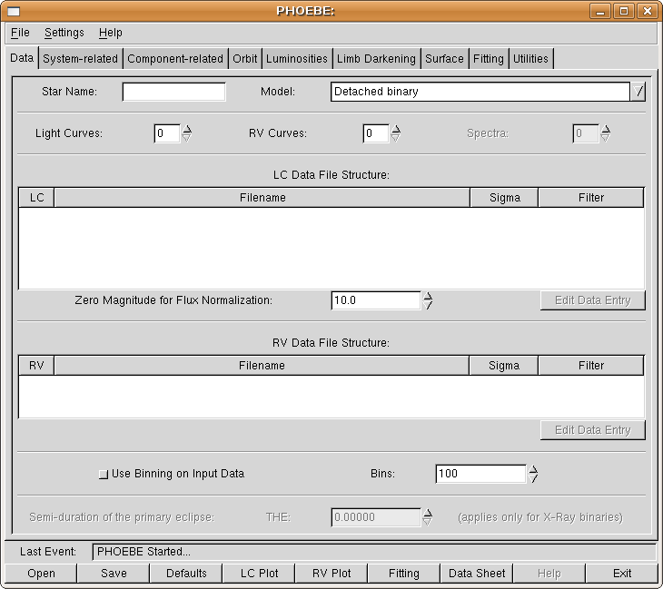
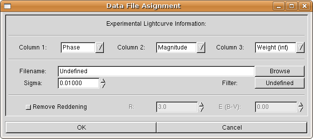
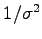
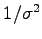
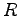
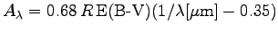
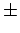
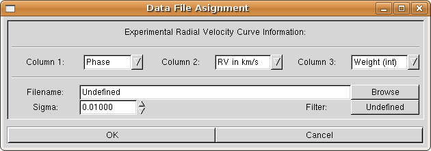
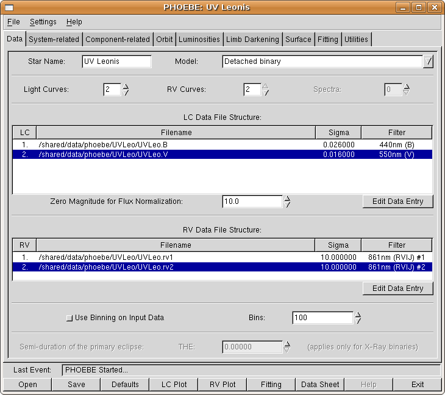

First and foremost, we have to tell PHOEBE where to find our experimental data.
On top of the Data tab (Fig. 4) you may see a Star Name entry field. This field is for your convenience only and carries no modeling significance. Click on it and enter UV Leonis. Note that the main PHOEBE window title has changed accordingly.
Figure 4:
PHOEBE data tab.
|

|
Now we shall face our first physical decision: we must assign a model to our star by choosing the most appropriate from the given choices (the Model field). The choice of a model is very important, since it poses additional constraints on our solution. Take a minute to browse through available models, but since our star in fact is a detached system, leave it on default5.
Next, we will supply PHOEBE with two light curves and two radial velocity curves; enter the number 2 in fields labelled Light Curves and RV Curves. You may change these values directly, by clicking on the entry and typing 2 instead of 0, or use the arrows next to the entry. As you change the number of experimental data curves, empty records are added to light curves list and to radial velocity curves list. Note that the used abreviation for light curves is LC and for radial velocity curves is RV. A major break-through will be accomplished by implementing complete spectra as experimental input data and this is planned for the intermediate future.
Assign the first light curve to PHOEBE. Edit the first LC data entry by either double-clicking on it, or by clicking on the Edit Data Entry button on the lower right part of the list while that entry is highlighted. An assignment window (Fig. 5) will appear.
Figure 5:
PHOEBE light curve assignment.
|

|
Input files should contain two or three columns. The first column contains the independent variable, which may be either phase or heliocentric Julian date (HJD). The second column contains the dependent variable, which may be in flux or magnitude units. The third column is optional; if present, it contains individual weights given either as weights or as standard deviation. The normalization is arbitrary; higher the number, stronger the weight.
Now inspect your input files from the terminal; simply write something like6:
[andrej@gemma andrej]$ head phoebe/data/UVLeo/UVLeo.B
# UV Leo Bessell B
# Data from the Crni Vrh Observatory, Slovenia
#
# Standard star T0845-00073 used to measure nightly sigma.
# Weights calculated as 1/sigma^2, renormalized to [0.1, 9.9].
#
# HJD Mag w
2451602.395411 10.130 2.53
2451602.397101 10.129 2.53
2451602.398802 10.157 2.53
[andrej@gemma andrej]$
Immediately you see that a # delimeter is used for commenting; whenever PHOEBE reaches it, the rest of the line is discarded. It is common practice to put a small header (such as the one you see above) to your input files. Spaces, tabs and empty lines in input files are allowed.
In our case the independent variable is heliocentric Julian date (HJD, PHOEBE refers to it simply as Time) and the dependent variable is magnitude. The third column contains individual weights. These weights are usually based on some sound time-dependent insight, such as nightly variation of a standard deviation  of a comparison star. If these s are to be trusted, the weights are transformed as . Higher the weight, stronger is the influence of a specific data point on the solution.
of a comparison star. If these s are to be trusted, the weights are transformed as . Higher the weight, stronger is the influence of a specific data point on the solution.
Now that we know about the input file structure, set all three column definitions accordingly. Assign a filename by clicking on the Browse button and selecting UVLeo.B from the data/UVLeo directory.
The dispersion (standard deviation) of our data is changing from night to night, which we already compensate with individual weighting. Thus a simple average over all nights is a good initial approximation. Set Sigma to 0.026. We shall correct this approximation when the time comes, during the course of solution seeking.
Finally, choose apropriate filter: click on the filter button and select 440nm (B) from the Bessell subgroup.
If you wish, PHOEBE may compensate automatically for the reddening effect given that the reddening correlation parameter  and the color excess E(B-V) are known. The measured magnitude decreases due to interstellar extinction by a factor
. We consider UV Leo's reddening effect to be negligible, so leave the reddening option off.
When you are content with the settings, click the OK button. This will close the assignment window and update the list of light curves. Repeat the above assignment for the other light curve file; this time set the filter to 550nm (V) from the Bessell subgroup and Sigma to 0.016.
All internal calculations in PHOEBE are performed in fluxes, not magnitudes. Therefore PHOEBE automatically transforms magnitudes to fluxes, if magnitudes are dependent variables, which in our case they are. The conversion is done by using the user-supplied zero magnitude (the Zero Magnitude for Flux Normalization option). If the zero magnitude corresponds to the magnitude at quarter phase, then the flux will be normalized at quarter phase. This is what the user should tend to, but not rigorously. By this we mean the following: don't spend your time seeking the right zero magnitude, leave this to PHOEBE. Just be sure you are close enough:  2 magnitudes or so. In our case leaving zero magnitude at 10.0 will do just fine.
Next, assign radial velocity curves to PHOEBE. In much the same manner as above, inspect the contents of a radial velocity file:
[andrej@gemma andrej]$ head phoebe/data/UVLeo/UVLeo.rv1
# UV Leo Primary Star Radial Velocities
# Data from the Asiago Observatory, Italy
#
# All data reduced with IRAF from acquired Echelle spectra
#
# HJD RV
2451209.51624 -151.4
2451210.43364 166.6
2451216.49289 116.0
2451217.46653 18.9
[andrej@gemma andrej]$
Independent variable for radial velocities is much the same as for light curves: either phase or HJD. The dependent variable is different; it is a measure of radial velocities, which is given either in km/s or in 100km/s. The latter is a WD legacy, because numerous input files from the past had these units as input. You are thus advised to use km/s if possible, because PHOEBE does all the renormalization internally. Weighting is done in exactly the same manner as for light curves.
Figure 6:
PHOEBE radial velocity curve assignment.
|

|
From inspecting the radial velocities experimental data, we conclude that the independent variable is Time and that the dependent variable is radial velocity in km/s. This time the weights are missing, so the third column of an input file should be set to Unavailable. Set both Sigmas to 10 km/s (the initial approximation) and choose a filter 861nm (RVIJ) from RV filters subgroup. Radial velocities should theoretically be independent of the filter choice and in most cases they are; this specific filter tells PHOEBE to use a straight flux file and not think of radial velocities as wavelength dependent values.
After assigning a second radial velocity curve, note that filter names in RV columned list have changed: two extra numbering delimeters #1 and #2 have been added to make a distinction in curve dependent assignments.
If you want to use bins instead of complete data arrays, you may select data binning next. This is advisable only when you deal with considerable number of data points (5000 or more), and that only when seeking a preliminary solution. Be aware that you are degrading light curves heavily this way.
If you followed the described procedure correctly, you should end up with a Data tab as shown in Fig. 7.
Figure 7:
This is how your Data tab should look after experimental data assignment.
|

|